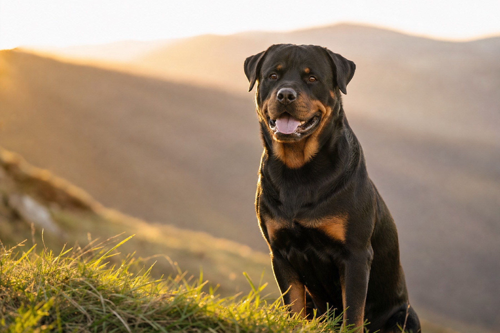
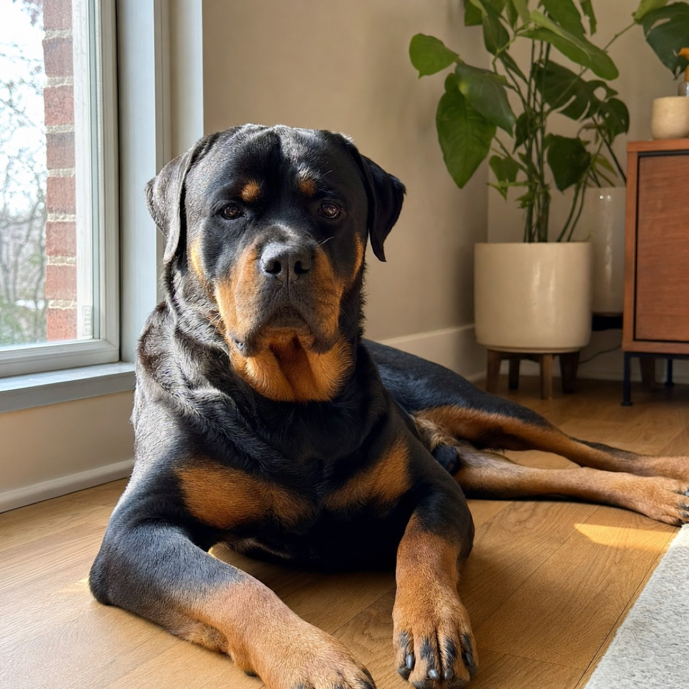

Protective nature
Naturally confident and watchful. They build strong bonds with their families and read a room before they react.

Breed focus
A responsive site about one of the most confident and devoted dog breeds, built with semantic HTML, CSS Grid, Flexbox and vanilla JavaScript.
Home
Rottweilers are powerful, dependable dogs with a long working history. They are admired for their courage, intelligence and loyalty to their families. With proper training and daily activity they become calm and steady companions.
The breed does best with structure. Consistent rules, early socialization and real exercise turn that natural confidence into a dog that is easy to live with.

Naturally confident and watchful. They build strong bonds with their families and read a room before they react.
They respond well to consistent training, positive reinforcement and daily mental work, not just physical exercise.
The short coat is easy to maintain. Regular brushing, nail care and good nutrition cover most of it.
Raised properly, they are affectionate and stable family dogs that stay close without being needy.
Gallery
Click any photo to open it larger.
Media
This clip shows the intelligence, strength and training ability that made Rottweilers a working breed long before they were family dogs.
The video is embedded responsively, so it keeps its aspect ratio from a phone to a wide monitor.
Contact
This is a student project, so the contact details below are placeholders.